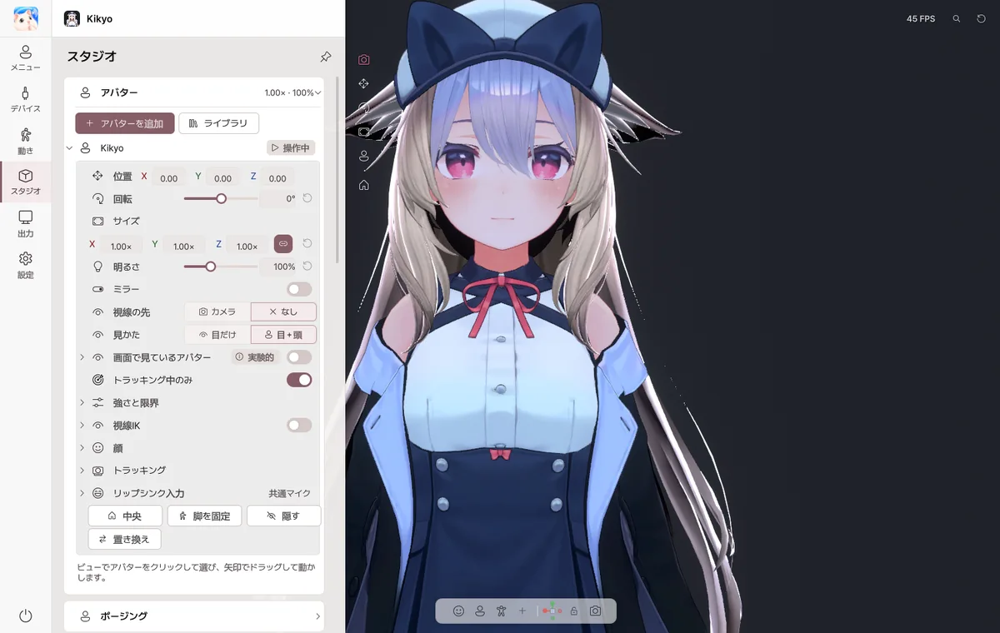
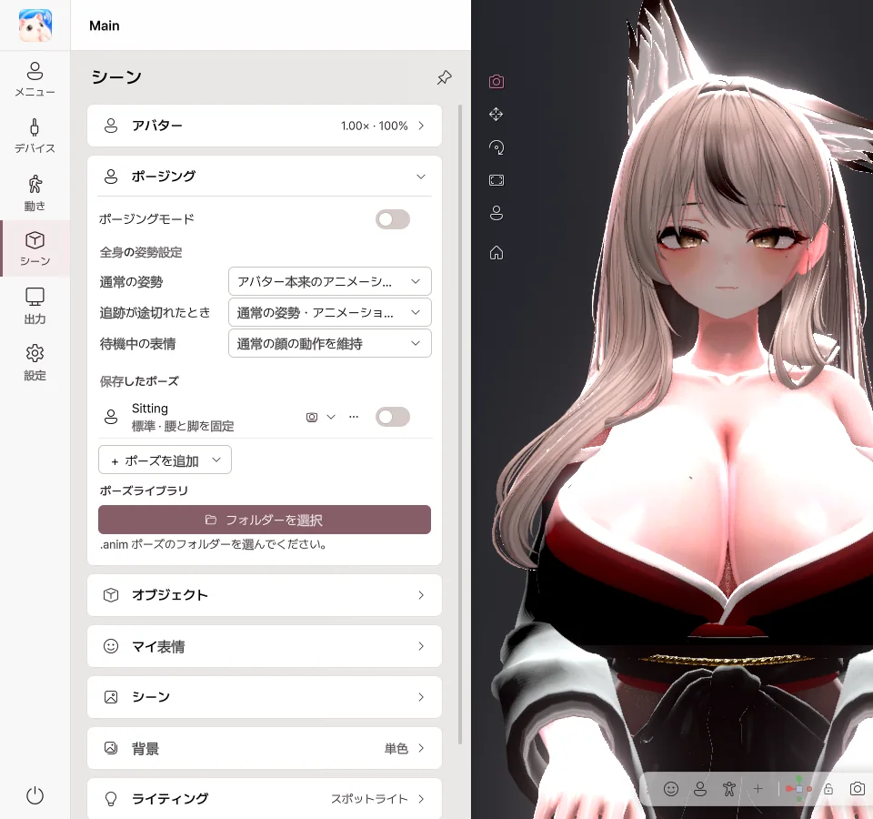
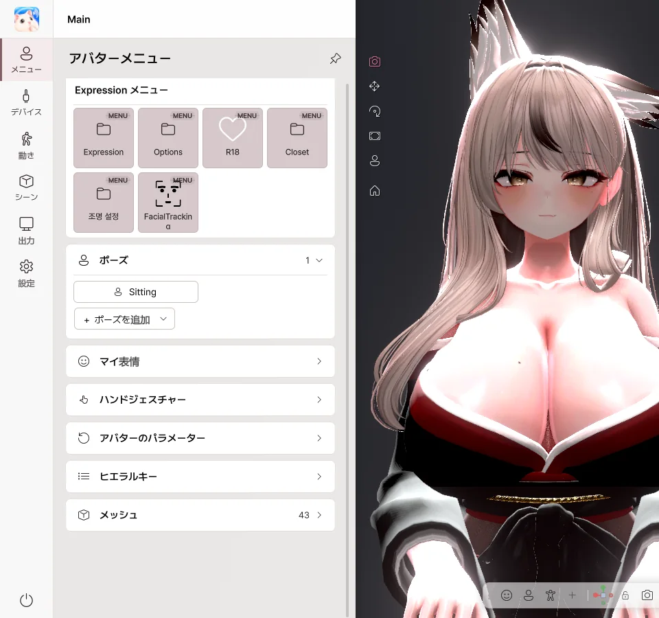
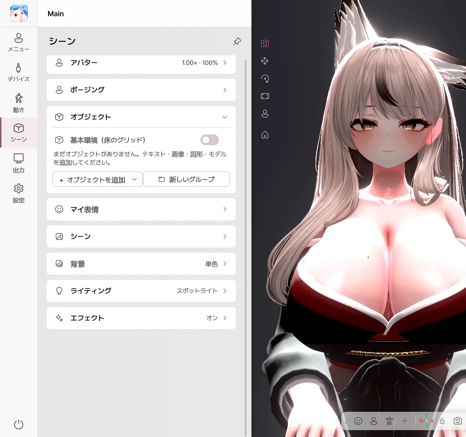
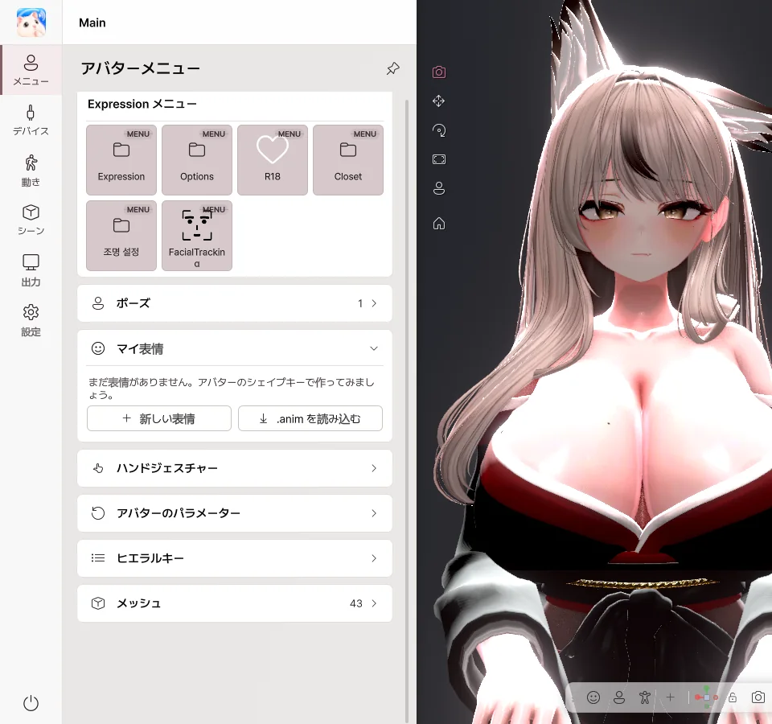

11. ポージング・オブジェクト・表情
v2.0.0：エディションによる機能とその影響

| 機能 | Basic | Pro | 何が変わるか |
|---|---|---|---|
| Spout2・NDI 出力 | ✅ | ✅ | OBS へ映像を送ります。NDI は Basic でも利用可で、OBS 側プラグインが必要です。 |
| 通常の照明・ポスト処理 | ✅ | ✅ | 色、影、ブルーム、背景などを変更します。 |
| ポージング・ポーズライブラリ・小物 | — | ✅ | 骨を調整・固定し、舞台や骨に小物を付けます。 |
| 複数アバター・同時操作 | — | ✅ | 同じシーンに複数配置し、トラッキングを共有・切り替えます。 |
| スタジオカメラ・ディレクター・マルチビュー | — | ✅ | 編集用シーンビューとは別のカメラ映像を送ります。 |
| カメラ別 Spout2 | — | ✅ | OBS に独立した送信元を最大 3 系統追加します。 |
| リモートセッション | — | ✅ | 他 PC とリアルタイム動作、表情、同意したアバターデータを共有します。 |
| ボリュームライト／HBAO／Beautify | — | ✅ | 光の筋・接触影・高度な画面効果を追加します。 |
| MP4 録画／追加画面共有ソース | — | ✅ | 配信録画、複数のゲーム・窓の合成に使います。 |
Pro にしてもすべての機能が自動でオンになるわけではありません。マルチビューにはディレクターとは別のスイッチが必要で、カメラ衝突・Look At IK 等には初期状態オフの実験機能もあります。項目を一つずつ切り替え、OBS で結果を確認してください。
カメラ方式・回転・スライダー · OBS・NDI・セッション
アバター素材の権利は Pro 購入後も変わりません。 リモートでデータを送る前に各制作者の利用規約を確認してください。
ポージング

スタジオ › ポージング › ポージングモード をオンにすると、ボーンを直接動かしてポーズを作れます。
- ボーンをクリックして選び、リングをドラッグして回します。回転ギズモは、ボーンの大きさに合わせて表示されます。
- 手や足をドラッグすると腕・脚全体がついてきて、Alt+ドラッグ でひじ・ひざの向きを変えられます。
- 左右対称 — 片側を動かすと、反対側も一緒に動きます。左右 で反転したり、片側をコピーしたりします。
- カメラを見る・床に足をつける — 顔をカメラに向けたり、足を床に合わせたりします。
- 固定 — 選んだボーンは、トラッキングやアニメーションで動かなくなります。
- 完了 でポーズを保存し、アバターメニューの ポーズ カードからすぐにオンにできます。破棄 したあとでも、Ctrl+Z で元に戻せます。
- 最初から 立ち休憩ポーズ と 座りポーズ が入っています。座りポーズは腰・脚だけを変えて、頭・腕はトラッキングのままです。
- 作ったポーズは、机のポーズにする（腕・手）や 休憩ポーズにする（全身）に指定できます。
ポージングモードをオフにする前に、ポーズを保存しておいてください。
ポーズごとの5つの追跡設定

アバターメニューやスタジオで保存したポーズの横のカメラアイコンを押すと、フェイシャル、頭、腕、指、胴体を独立してON/OFFできます。ONの部分は追跡され、OFFの部分はポーズを維持します。5項目はポーズごとに保存されます。
- 頭OFF・フェイシャルONなら頭の角度を固定しながら表情を追跡できます。
- フェイシャルOFFでもカメラ目線は独立して利用できます。
- 標準の座りポーズは骨盤と脚を固定し、5つの追跡項目を初期状態で許可します。
基本ポーズとAFK待機ポーズ
- 基本ポーズは追跡中のアバターの休憩ポーズです。
- 追跡が切れたときのポーズはAFK状態で使う別のポーズです。
- 待機中の表情はAFK時に自動再生する保存済みのマイ表情です。待機ポーズなしで表情のみ設定することもできます。
- 手動適用したポーズは自動待機ポーズより優先されます。追跡が復帰すると通常の動作に戻ります。
- 待機・切り替え・復帰の時間は動作 › 体 › AFK切り替え時間で設定します。
ポーズライブラリ
スタジオ › ポージング › ポーズライブラリ で .anim ファイルが入ったフォルダーを選ぶと、すべてのポーズを 今のアバターのサムネイル で表示します。
- サブフォルダーまで読み込み、ポーズ・手の形・モーションに分けて表示します。検索とお気に入りも使えます。
- 適用 するとすぐにそのポーズになり、動くクリップはアニメーションとして再生されます。解除 で元に戻ります。
- 編集 でポージングモードに入って直し、新しいポーズとして保存します。
- Unity で作ったヒューマノイド・ボーンの
.animを、ひとつずつ読み込むこともできます。
オブジェクト

スタジオ › オブジェクト › + オブジェクトを追加 で、テキスト、画像、図形、3D モデルを置きます。
- 付ける場所 を頭や手にすると、アバターと一緒に動きます。
- テキストはダブルクリックすると、その場で編集できます。
- 3D モデルは、Unity の Curious Bobby → Prop Exporter で
.vpropファイルを作って使います。
画面共有のほかのソース
画面共有に、ウィンドウやモニターをさらに重ねられます。チャットウィンドウや音楽プレーヤーを一緒に見せたいときに使います。
マイ表情
アバターのシェイプキーで、自分だけの表情を作ります。
- 新しい表情 を押します。
- 横のパネルで、録画するようにシェイプキーを動かして表情を作ります。プレビュー強度 で、無表情（0%）から表情（100%）までなぞりながら確認します。
- 保存 すると、アバターメニューの マイ表情 カードから押してオンにできます。
- Unity で作った表情のアニメーション（
.anim、シェイプキー）も読み込めます。動くクリップは、表情をオンにしている間、再生されます。

新しい表情を作成と .anim を読み込むボタンは、スタジオとアバターメニューの両方に並んでいます。静止したシェイプキー表情と複数フレームの Unity .anim 表情を取り込めます。アニメーションのループは元のクリップ設定に従います。表情タイルをドラッグして並べ替え、右クリックでショートカットやクイックアクションを登録できます。
自動表情
笑ったり驚いたりすると、決めておいた表情が自動で出ます。動き › 自動表情 でオンにして、笑顔・驚き・ウインクなどの表情ごとに、表示する表情を割り当てます。